Hello!
My name is Eetu Rantanen, but online I often go by XeduR. This site is a code portfolio: Solar2D games and tools, game jam entries, and a handful of other things I've built in my free time. The source for most projects is on my GitHub profile under the MIT License.
I'm a game designer and full stack developer with over 13 years of professional experience. Most of what's on this site is built with Solar2D and Lua, and a good chunk of the games are jam entries from Ludum Dare and Global Game Jam.
I'm also fascinated by data and analytics. I have extensive professional experience with data, from building end-to-end pipelines to statistical modelling and turning raw data into insights. In my free time, I've data mined plenty of the games I play, and I genuinely enjoy talking about and teaching data and statistics. That's how I ended up as a visiting lecturer of business mathematics and statistics at Estonian Business School in Helsinki from 2018 to 2023, where I got to share my interests and hopefully nudge a few students to look into the field themselves.
You don't need to credit me for using any of my projects, but I'm always happy to hear when they've been useful to someone.
These are some of the non-commercial games that I've created over the years in my free time. These games do not include any of the games I've created for my clients or other commercial projects.
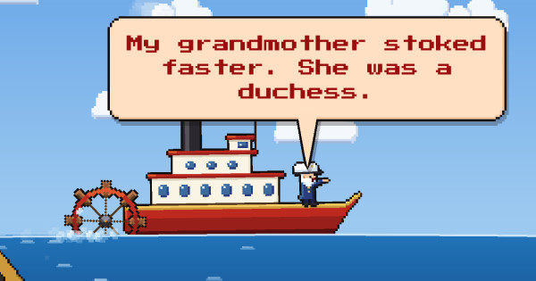
Full Steam Ahead!
Shovel coal to make a steamboat go faster and faster for its pompous captain. Created for Ludum Dare 60.
Tech: Solar2D, Lua
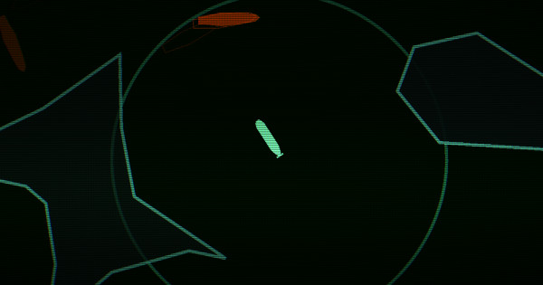
The Hunt for Red April
A sonar-based submarine stealth game where every ping reveals your position. Created for Ludum Dare 59.
Tech: Solar2D, Lua
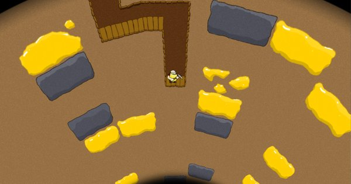
Gone Diggin'
A simple game about a dwarf that wants to dig for gold. Created for Ludum Dare 48 COMPO.
Tech: Solar2D, Lua
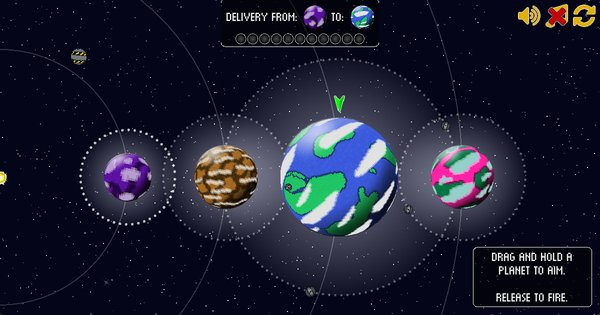
Grav-O-Delivery
A short and sweet game about delivering interplanetary parcels using gravitational pull. Created for Ludum Dare 53 JAM.
Tech: Solar2D, Lua
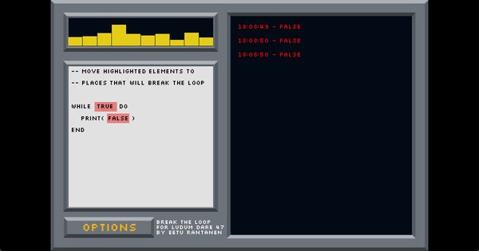
Break the Loop
A code-themed puzzle game where you drag and drop code elements to break the loop. Created for Ludum Dare 47 JAM.
Tech: Solar2D, Lua
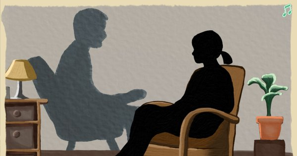
xperiment
A narrative-driven point-and-click game that explores what it means to make someone laugh. Created for Global Game Jam 2024.
Tech: Solar2D, Lua
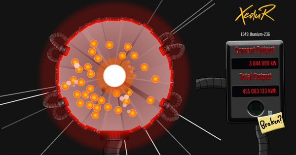
Uranium-236
A nuclear reactor management game where you must keep an unstable reactor running. Created for Ludum Dare 49.
Tech: Solar2D, Lua
I'm also involved with Roso Games, which is a free, remote game development project where beginners learn to build and publish games together using Solar2D and Lua. It's run by the Finnish non-profit Kukunori ry and has already shipped several titles on Roso Games - Itch.io.
The project is currently only available in Finnish, but we are working on expanding it globally and open sourcing the learning materials so that anyone can pick up game development, Lua programming, and the Solar2D engine.
These projects range from individual tables or concepts to more complex functions and systems. Essentially, these projects come in all shapes and sizes, but I either didn't consider them big enough or distinct enough to turn them into plugins.
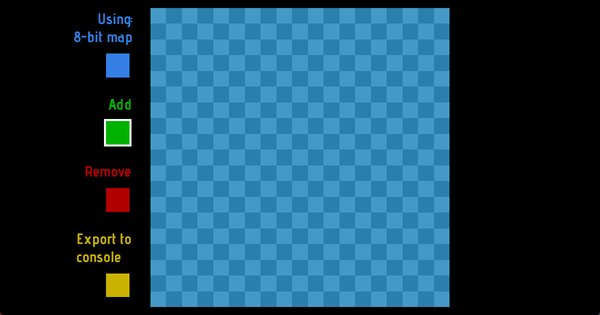
Autotile
Touch a cell on a grid and Autotile figures out which tile to place and updates all connected tiles automatically.
Tech: Solar2D, Lua
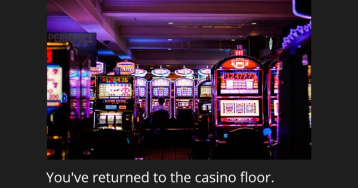
Weaver
A narrative and dialogue engine for Solar2D with Twine 2 integration for creating branching stories and dialogue trees.
Tech: Solar2D, Lua
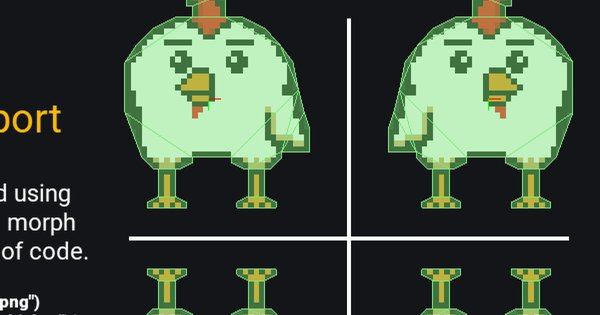
Morph
Morph allows for simple creation and scaling of display objects and their physics bodies in Solar2D.
Tech: Solar2D, Lua
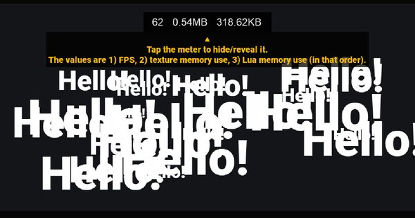
Performance Meter
A customisable on-screen meter for tracking FPS, texture memory, and memory usage in your Solar2D app.
Tech: Solar2D, Lua
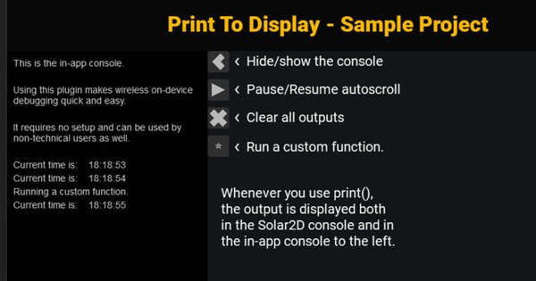
Print to Display
Print to Display adds a console to your app, making it easy to view prints even while testing on devices.
Tech: Solar2D, Lua
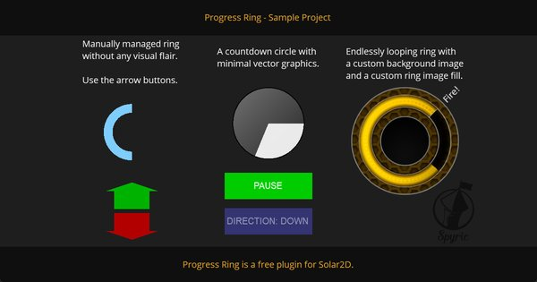
Progress Ring
A quick and easy plugin for creating progress rings (or circles) in Solar2D.
Tech: Solar2D, Lua
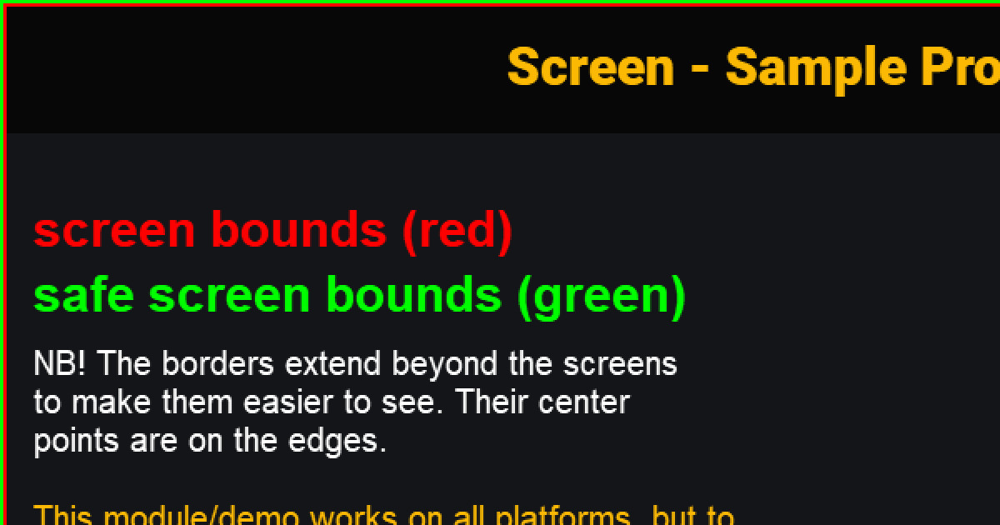
screen.lua
A table of dynamically calculated screen values for creating resolution-independent UIs and layouts in Solar2D.
Tech: Solar2D, Lua
External: This link opens in a new tab.
advancedAudio.lua
An advanced audio management library for Solar2D with channel management, priority system, and audio type categorization.
Tech: Solar2D, Lua
External: This link opens in a new tab.
All of the projects in here are explicitly my personal code projects. If you wish to see some of the graphic design, websites or other work that I've created for some of my clients over the years, then please visit my other site: www.erantanen.com.
Note: All of these projects open in a new page.
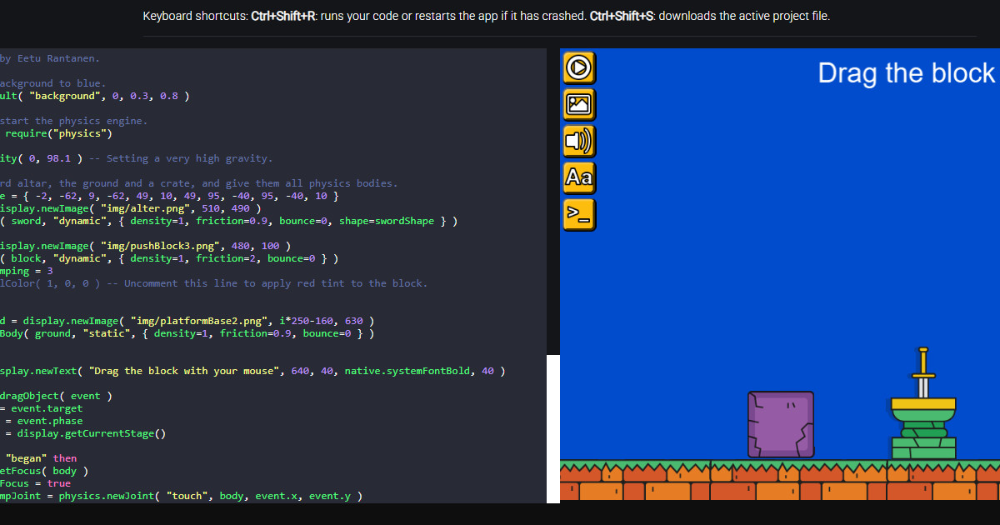
Solar2D Playground
An interactive website that lets you write, run, and share Solar2D projects directly in your browser.
Tech: Solar2D, Lua, JavaScript
External: This link opens in a new tab.
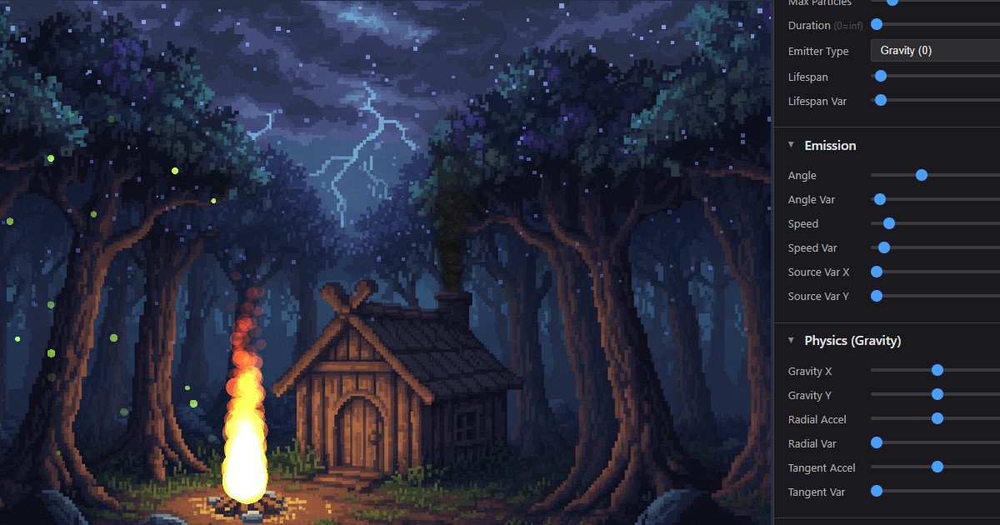
Solar2D Particle Editor
An interactive browser-based particle effect editor for Solar2D. Create, customize, and export particle emitters with real-time preview and built-in templates.
Tech: Solar2D, Lua, JavaScript
External: This link opens in a new tab.
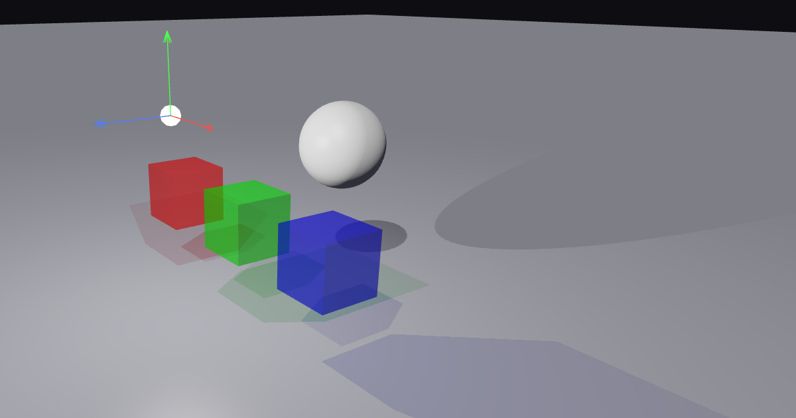
WebGL2 Lighting Playground
A browser-based 3D scene editor for experimenting with real-time lighting, shadows, and translucent color mixing - built entirely with vanilla JavaScript and WebGL2.
Tech: JavaScript, WebGL2
External: This link opens in a new tab.
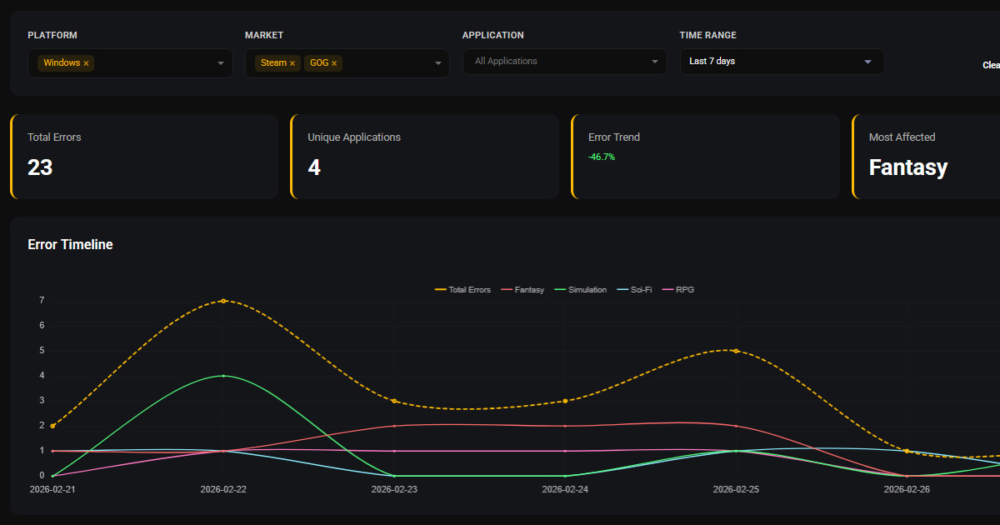
Error Tracker
A self-hosted error monitoring system for games/apps. Receives error reports from devices, intelligently groups similar errors, and provides real-time dashboards and configurable email alerts.
Tech: PHP, MySQL, JavaScript, Chart.js
External: This link opens in a new tab.
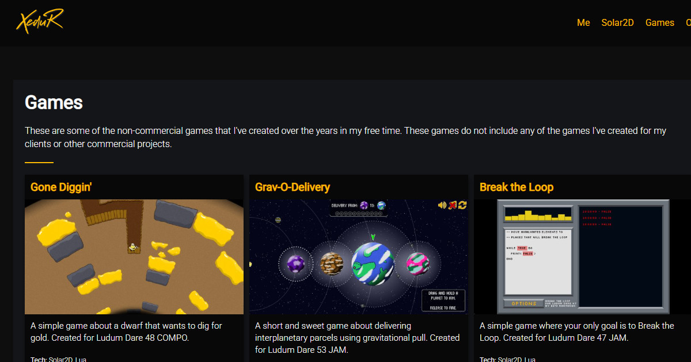
XeduR.com
This website that you are on right now! You've seen how it works, but if you want to see the source and how it's built too, then look no further.
Tech: JavaScript, Python
External: This link opens in a new tab.
If you'd like to learn more about me or my work, visit my other site: www.erantanen.com.
I'm active in the Solar2D community on the forums and Discord. I'm also an active game jammer and have participated in both Ludum Dare and Global Game Jam.
You can also reach me directly via email: eetu@erantanen.com.